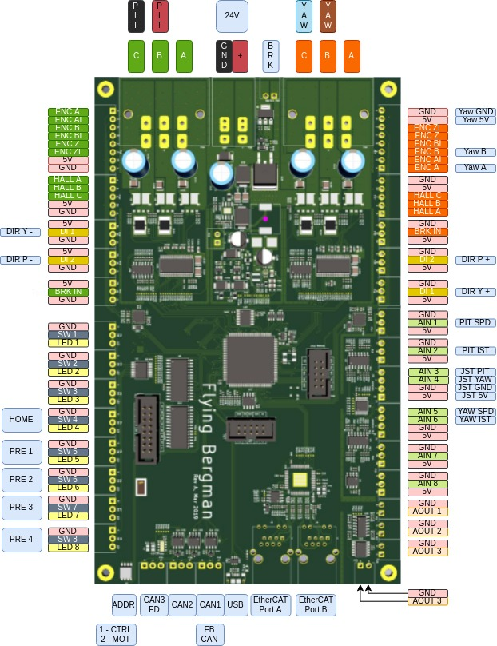

User Manual
Table of Contents
1 User Manual
This is a user manual for a piece of hardware designed by Martin Schröder (Swedish Embedded) in the begining of 2019. This manual targets revision A of the board below:

1.1 About this board
This board is designed to control the "Flying Bergman" crane system. The system consists of a control unit and a motor control board both of which are connected together by a cable. The same board design is intended to be used in both the motor control application as well as the user hand held control panel. The CAN bus address switch (S2) is used to switch software mode between master (control panel) and slave (motor drive).
1.3 Hardware
